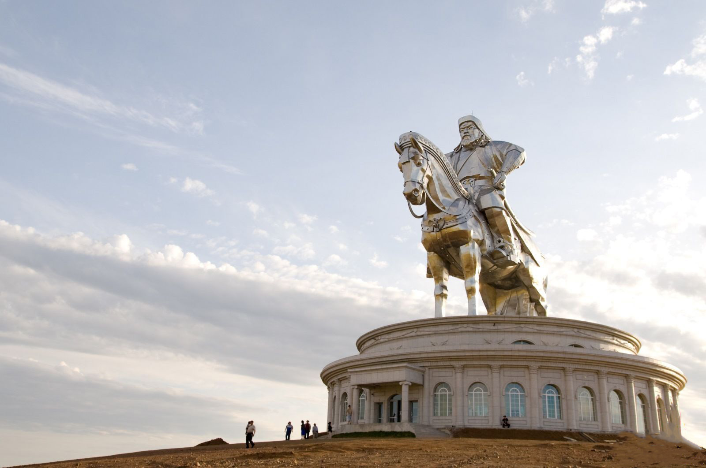
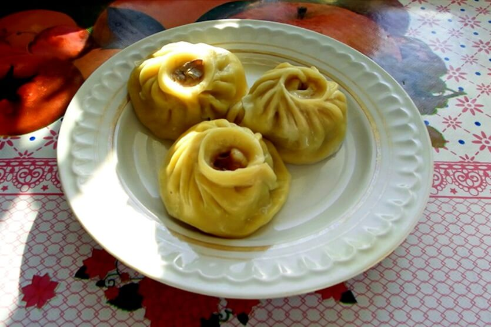
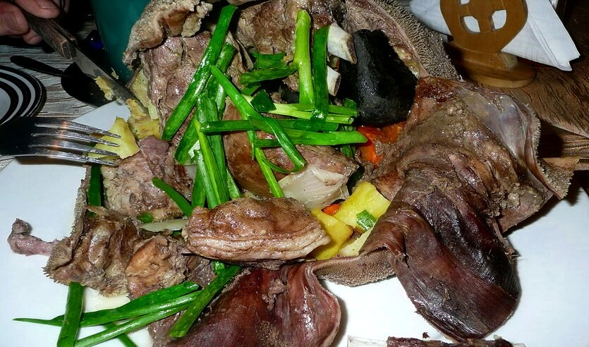
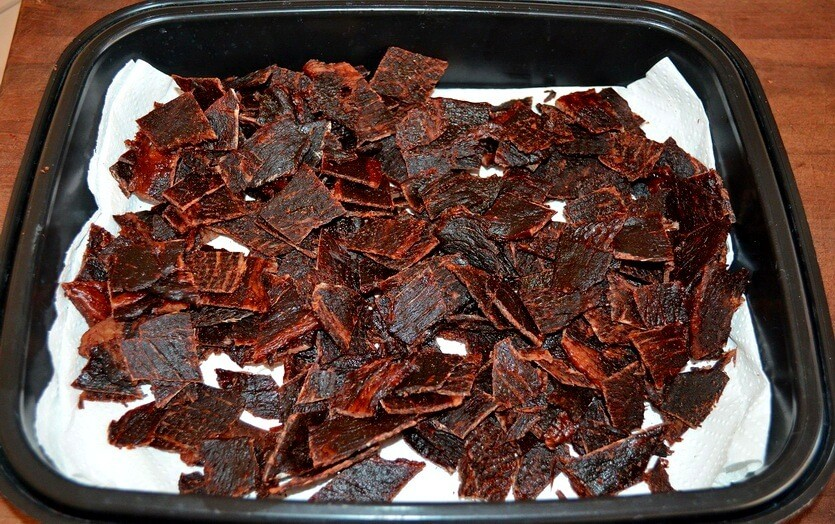
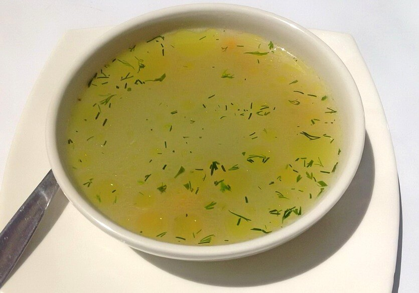
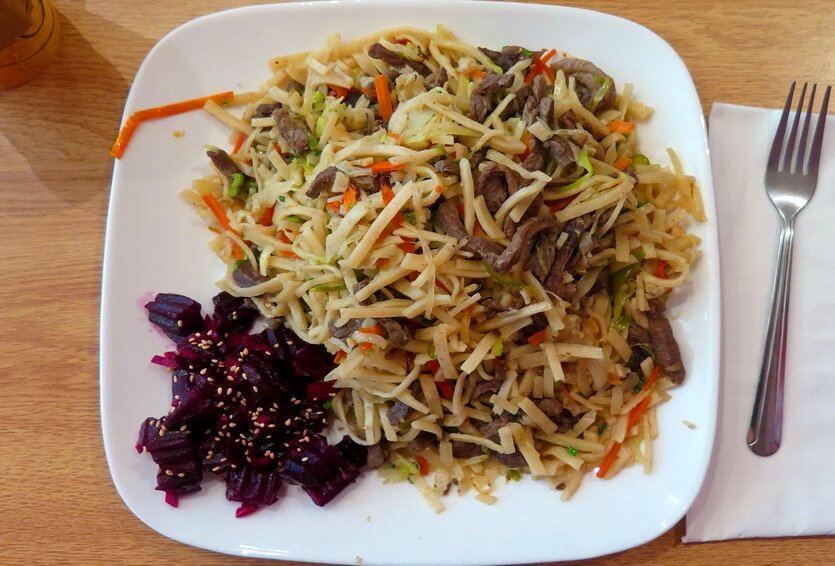
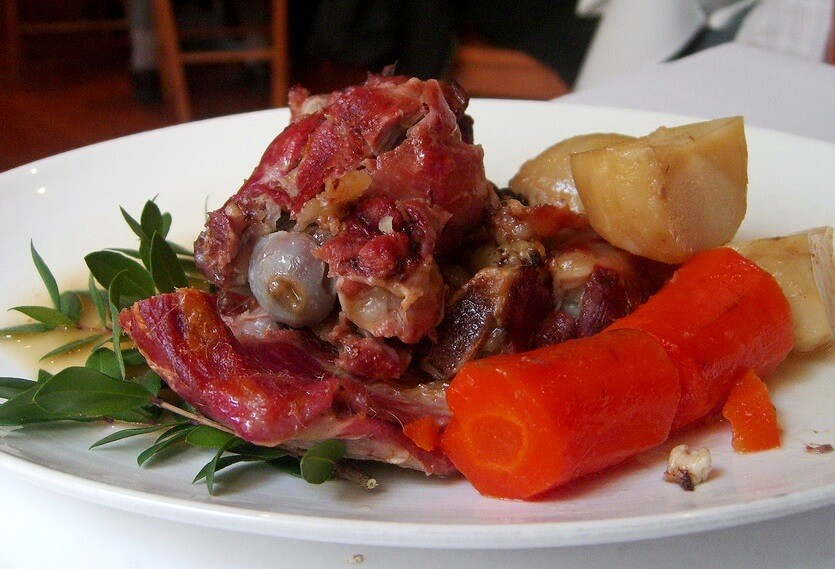
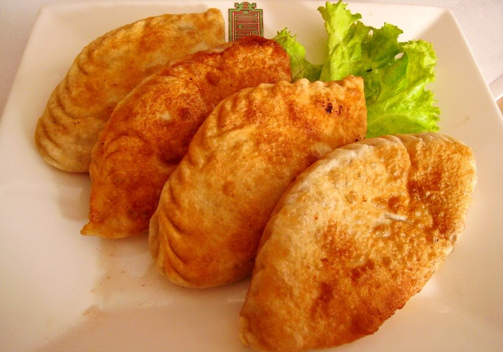
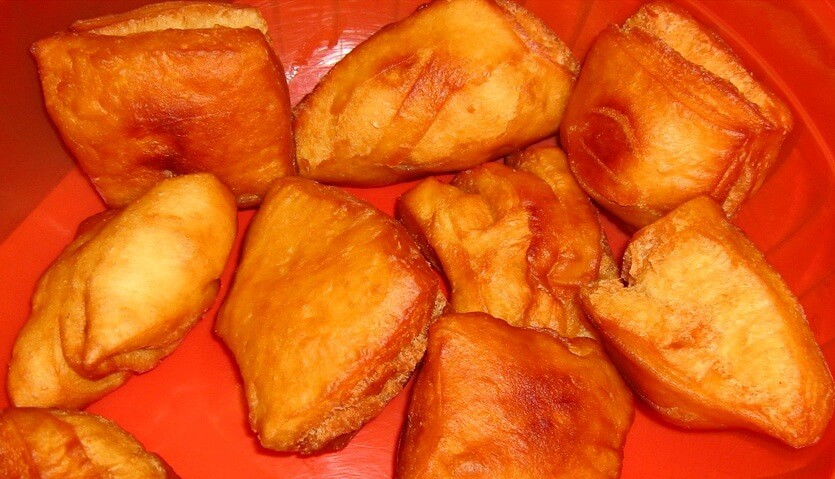

×

Mongolia
Традиционная еда
Буузы — Пожалуй, самое известное блюдо монгольской кухни, которое точно стоит попробовать каждому туристу. Достаточно взглянуть на эти пухлые мясные «мешочки» – вы сразу их узнаете. По сути буузы – это манты (или большие пельмени особой формы), сваренные на пару.

Хорхог — гастрономическая достопримечательность Монголии. Это фантастически вкусное мясо барашка, приготовленное на камнях в особом металлическом котле. Обязательно попробуйте этот необычный деликатес. Говорят, что мясо на камнях было любимым блюдом Чингисхана.

Борц — Это вяленое мясо, рецепт которого был создан кочевниками. Чтобы приготовить борц, мясо нарезают небольшими полосками, а затем сушат на открытом воздухе в течение месяца. В результате оно приобретает коричневато-красный цвет. Снаружи закуска достаточно твердая, а внутри приятно волокнистая.

Батан — Национальный монгольский суп с простейшим составом. Его готовят на крепком мясном бульоне из баранины или говядины. Дополнительно добавляют немного муки и овощей, чтобы сделать его более сытным, но не перебить естественный вкус мяса. Из специй в традиционный монгольский суп кладут только соль и перец.

Цуйван — Домашняя лапша с крупными кусками мяса и овощей. Это традиционное монгольское блюдо обязательно готовят с нуля. Лапша получается из тонких полосок теста – она тушится вместе с мясом. Из овощей всегда добавляют лук и морковь, реже – картошку, капусту, перец.

Боодог — Чаще всего этот монгольский деликатес готовят из козлятины, однако иногда используется дичь, мясо сурка или что-то еще. Это блюдо точно не стоит пробовать каждому – оно на любителя. Однако многие туристы решаются на дегустацию и остаются довольны. Если боодог готовят из мяса козы, оно запекается в оболочке из козлиного желудка (разумеется, прошедшего кулинарную обработку).

Хушур — Если вы любите чебуреки, в Монголии вам однозначно стоит попробовать хушур. Румяные жареные пирожки их тонкого теста с большим количеством начинки – они не слишком большие, но очень сытные.

Боорцог — это небольшой аппетитный пончик, который подают в качестве закуски к шурпе или чаю. Однако не спешите делать выводы. «Правильный» боорцог жарят во фритюре до румяной корочки, используя животный жир (хотя в современном мире ему на смену все чаще приходит растительное масло). Пончики совсем небольшие, хрустящие снаружи и мягкие внутри. Их нередко посыпают сахарной пудрой или поливают жидким медом.

____